Sakaishi, Fukui: things to do, food and stays
Sakaishi · Fukui
Sakaishi
Highlighted on the Fukui map.

Stay
ホテル クージュ福井

Hotel Kuju Fukui
Hotel in Maruoka, Sakaishi with parking.
オーベルジュほまち 三國湊
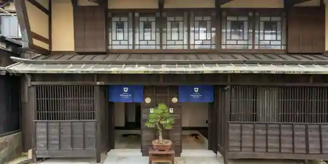
Oberuju Homachi Mikuni Minato
詰所三国
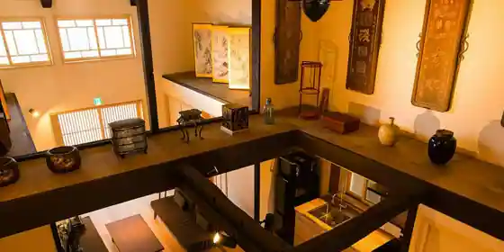
Tsumesho Mikuni
Inn in Mikuni, Sakaishi with a renovated traditional house.
みくに隠居処
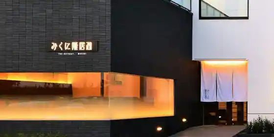
Mikuni Inkyo Tokoro
モリス・リゾート東尋坊 ｜ Morris Resort Tohginbow
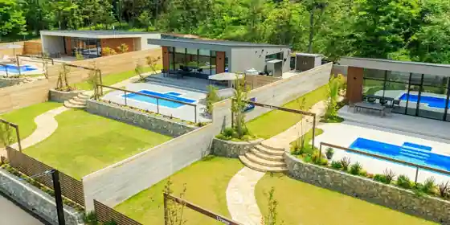
Morisu Resort Tojinbo | Morris Resort Tohginbow
四方館
Shiho Kan
Bunbun INN
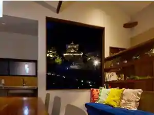
Bunbun INN
Inn in Maruoka, Sakaishi with one group per day.
丸岡温泉 たけくらべ
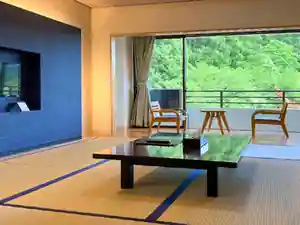
Maruoka Onsen Takekurabe
Inn at Maruoka Onsen in Maruoka, Sakaishi.
東尋坊温泉 三国オーシャンリゾート＆ホテル(旧三国観光ホテル)
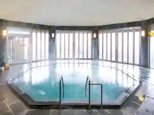
Tojinbo Onsen Mikuni Oshan Resort & Hotel (Kyu Mikuni Kanko Hotel)
Resort hotel at Tojinbo Onsen in Mikuni, Sakaishi.
休暇村 越前三国
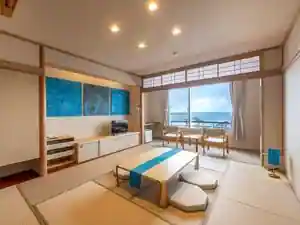
Kyukamura Echizen Mikuni
年中活蟹の宿 展望三国温泉 はれや旅館
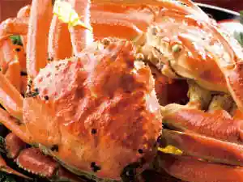
Nenju Katsu Kani No Yado Tenbo Mikuni Onsen Hareya Ryokan
Ryokan inn at Tenbomikuni Onsen in Mikuni, Sakaishi with open-air baths and scenic views.
三国温泉 ばんこ旅館
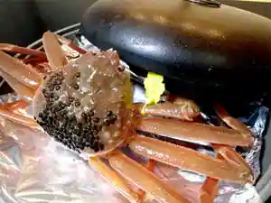
Mikuni Onsen Banko Ryokan
Ryokan inn at Mikuni Onsen in Mikuni, Sakaishi.
Dining
川喜
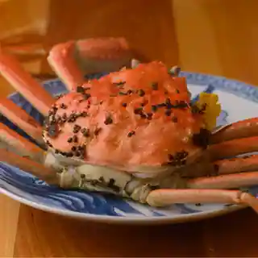
Kawa Ki
望洋樓
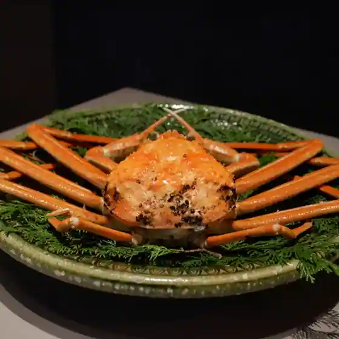
Boyo Ro
バードランド
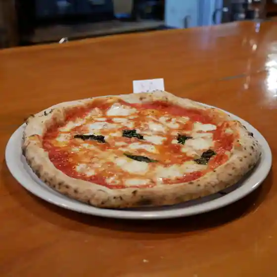
Badorando
盛安
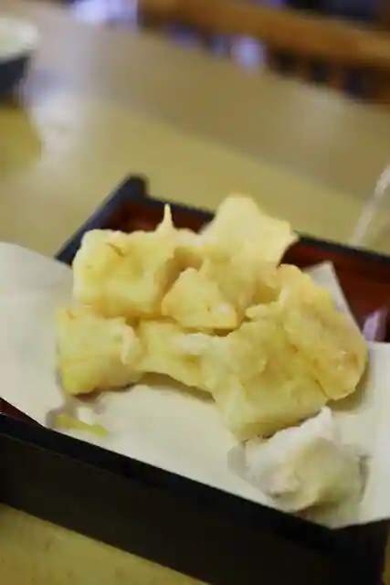
Moriyasu
サミュゼ
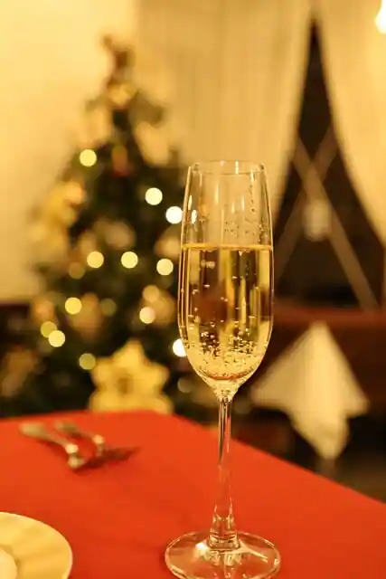
Samyuze
カルナ
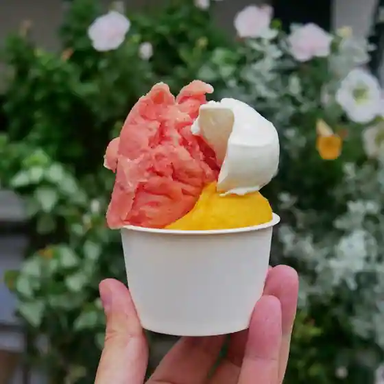
Karuna
越前蟹の坊
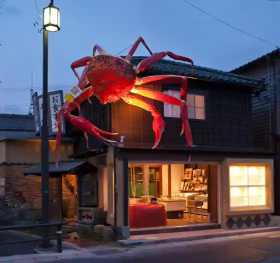
Echizen Kani No Bo
内湯の宿 おおとく
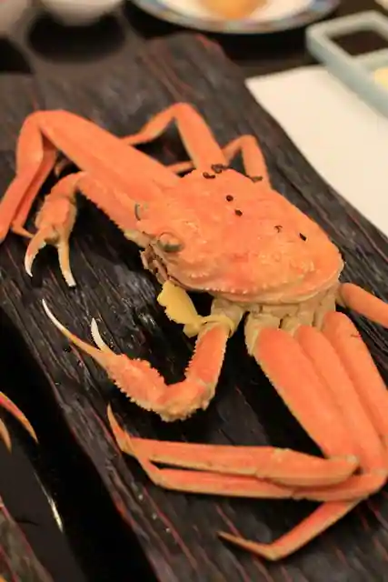
Uchiyu No Yado Otoku
富士寿司
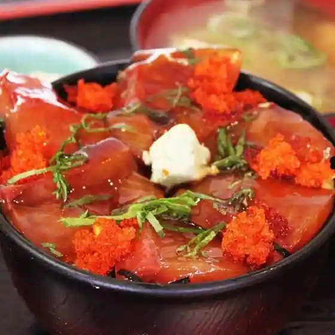
Fuji Sushi
LULL
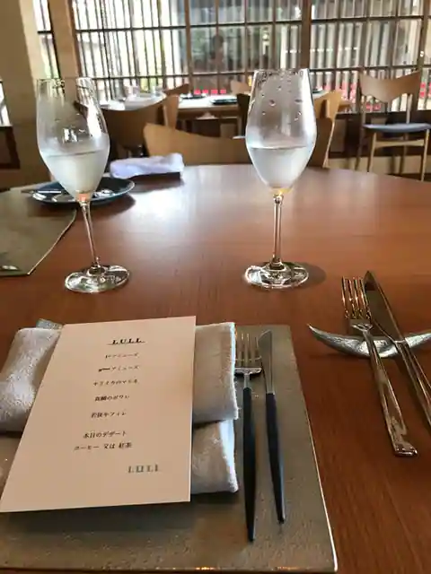
LULL
料理茶屋 魚志楼
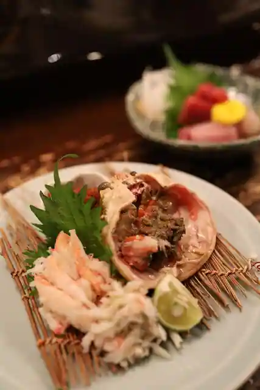
Ryori Chaya Sakana Kokorozashi Ro
谷口屋
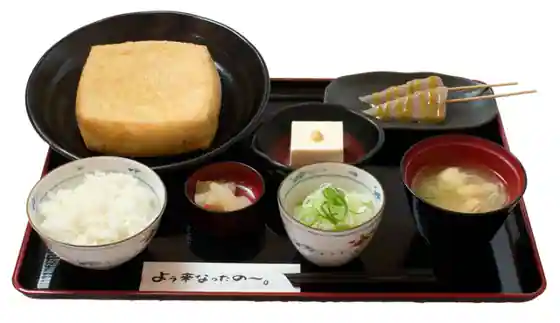
Taniguchi Ya
越前がに やまに水産
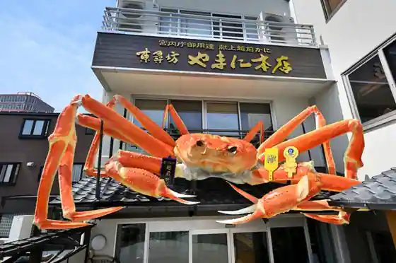
Echizen Gani Yamani Suisan
IWABA CAFE

IWABA CAFE
丸岡二八そば 大宮亭
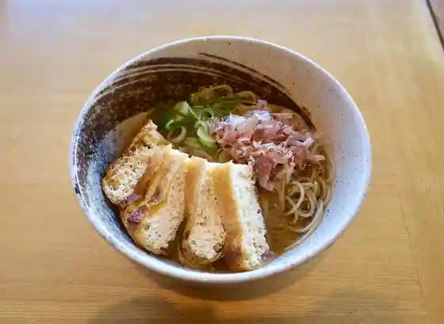
Maruoka Nihachi Soba Omiya Tei
五月ヶ瀬 舟寄庵
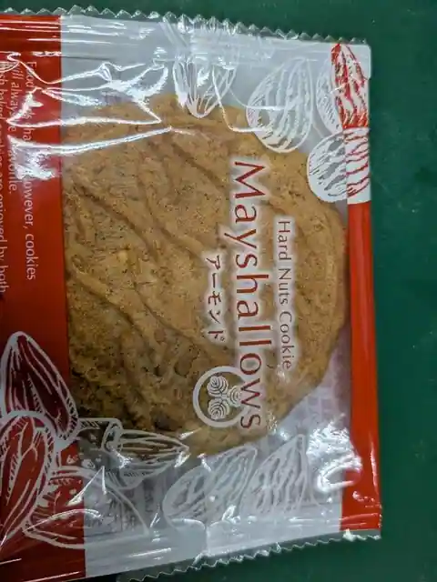
Gogatsu Ke Se Fune Yori Iori
一筆啓上茶屋 そば処
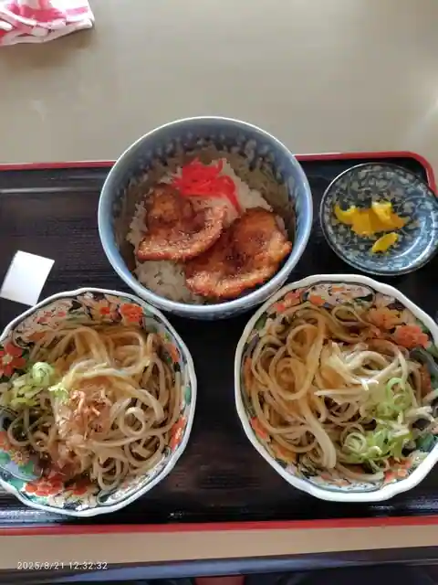
Ippitsu Keijo Chaya Soba Tokoro
新保屋
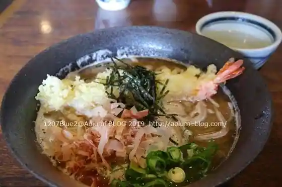
Shinbo Ya
炭魚ほんだ
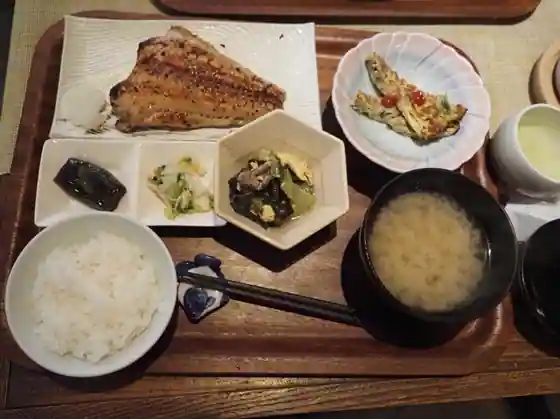
Sumi Sakana Honda
そば処あおき
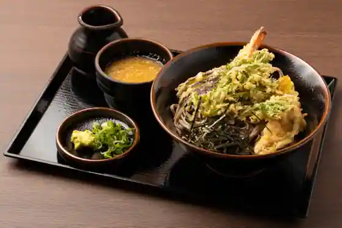
Soba Tokoro Aoki
手打ちうどん 新富
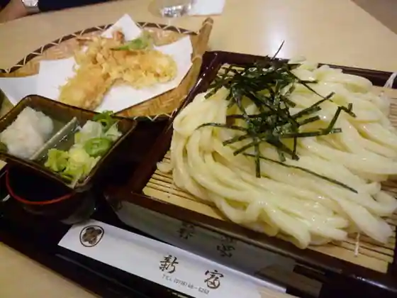
Teuchi Chiudon Shintomi
三國湊座
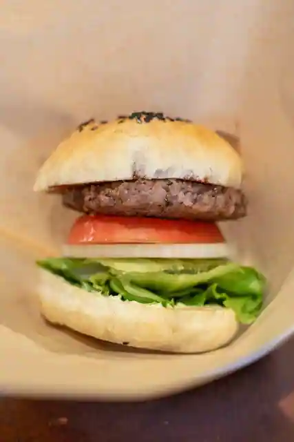
Mikuni Minato Za
ハナマル霞庵
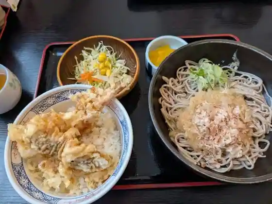
Hanamaru Kasumi Iori
石勝食堂
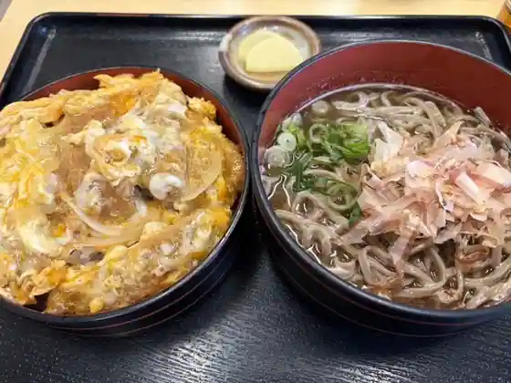
Sekisho Shokudo
Sights
Tojimbo
Osu Shima
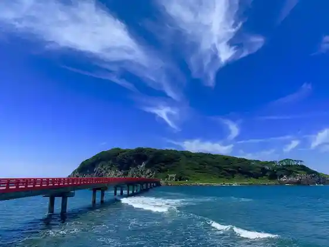
Shiba Matsurigoto Warudo
Echizen Matsushima Aquarium
Maruoka Shiro
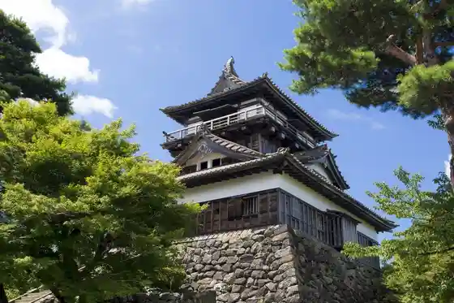
Mikuni Minato Retoro
Mikuni Sansetto Beach
Fureai Park Sanri Hama (Roadside Station Mikuni)
Fukuiken Jido Science Museum (Enzeru Land Fukui)
Echizen Matsushima
Kyoryu Forest
Minshuku Nakajima
Yuri no Sato Park
Roadside Station Sakai (Sakaishi Chiiki Koryu Center (Inesu))
Taki Tani Tera
Tojimbo Shota Ro
Mikuni Onsen O Yado Araya
Hamachi Beach
Dejima So
Sakaishi Kaihin Nature Park
Minshuku Meiji
Takeda no Yama Village Koryu Center
Ikoi no Yado Nakamoto
Chihiro
Mikuni Shrine
Kyu Morita Ginko Main Shop
Maruoka Onsen Takekurabe
Mikuni Rabenda Farm
Brilliant Heart Museum
Araiso Promenade Ni no Hama Promenade
Fukuiken Sogo Guriin Center
Sakaishi Ryusho Museum
Maruoka Shiro Kankojoho Center (Maruoka Shiro Machiyorimagatto)
Kyuka Village Echizen Mikuni Oto Campground
Ippitsu Keijo Nippon'ichi Mijikai Tegami no Kan
Senko no Ie (Tsubokawa Ie House)
Sanemori Do (Sanemori Sha)
Ikegami Himawari Park
Osakana Shuseki Tokoro Ototo (Te Burade OK! Umizuri Ri Experience)
Fukuiken Kyoiku Sogokenkyusho Kyoiku Museum
Machi no Kura
Minshuku Itamoto
Takekurabe Plaza
Kyu Kishi Meika
Takeda Suisha Merodi Park
Nitta Yoshisada Kobo Tokoro (Shonen Tera)
Roku Ro Seyama Kofun Gun
Shiba Matsurigoto Warudooto Campground
Zuiun Yama Kinpo Tera
BeachHIllFoodWorks
Sakaishi Yakusho